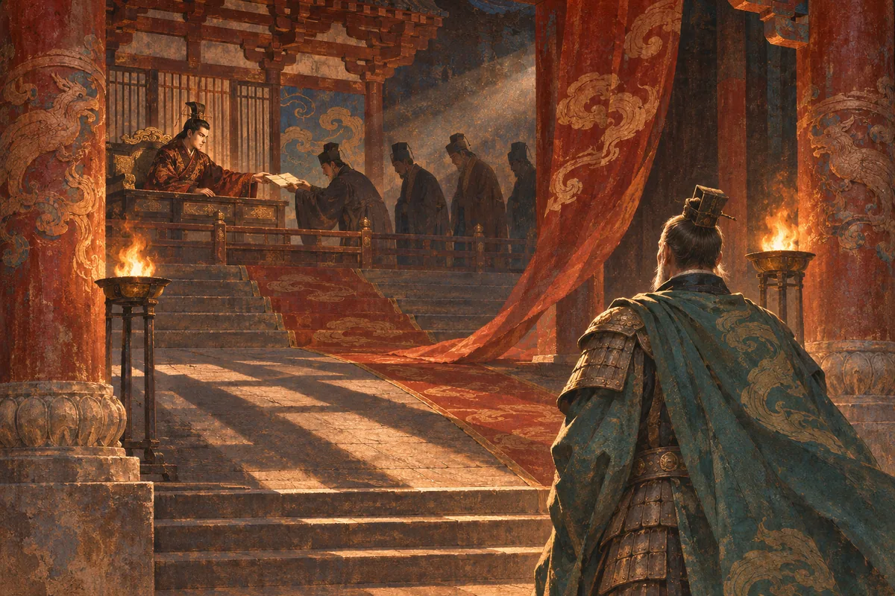

《北史》卷七 · 齐本纪中
忽意其经与高岳私通，
无故斩首。
突出“忽意”与突然的杀害。它让读者首先看见暴怒与失控。
中国历史概论 / 550—577
北齐皇室的暴力事件，
应该怎样解释？
先认清高氏家族里谁在掌权，再用四个案例看清谁作决定、谁执行。读完可以比较各案背后的冲突，也可以打开材料卡，对照白话、古文和出处。
主线约 8—10 分钟 · 每案附史料出处

阅读方法
前两步帮你看清事情的经过，后两步带你比较解释、回查依据。族谱、动画和材料库都可在读到相关人物或事件时回看；遇到看不懂的史书名、年号或身份，可查读史小词典。
人物介绍
高欢为北齐政权奠基，他的儿子高洋建立了北齐。
先认清这些人的身份和亲属关系，读到后面的案例时，就容易分清当时谁在位、谁下令、谁执行。
高欢之子 · 兄弟四人先后掌权
高湛之子
1 / 高洋与高德政 · 559年
发生了什么：高德政曾协助高洋建立北齐，后来多次劝阻其酗酒与违法行为，最终与妻、子一同被杀。
本节分析：按时间梳理劝谏、排挤、刺伤、处斩和事后说法，判断长期君臣冲突与同僚推动各起什么作用。点击下面五个阶段查看。
主要解释（暂定）：高洋与反复劝谏的旧臣之间存在长期冲突。同僚排挤、财物指控可能推动事态；高洋事后的解释，还需与此前过程区分。这是一种有证据约束的解释，仍非唯一结论。
2 / 高纬与斛律光 · 572年
发生了什么：斛律光是掌兵重臣，后来被高纬召入宫，由刘桃枝等杀害。史书叙述涉及敌方谣言、朝中竞争和高纬的猜忌。
本节分析：区分谁传播消息、谁推动决定、谁下令和谁执行，再讨论这些环节怎样影响杀害决定。点击关系图中的人物查看。
关系图依据史书叙述整理，不表示已独立证实全部幕后活动；具体传递环节仍需考证。
事件过程示意 / 斛律光案
已遵循系统的减少动态设置，播放时以静态画面切换；也可点击四个阶段逐步查看。
依据概括｜《北齐书》卷十七；《资治通鉴》卷171。
四个阶段是页面的讲解安排。姿势、服饰、建筑及画面用时均为设计示意；动作不扩写为确定技法。
主要解释（暂定）：高纬对掌兵重臣的猜忌，受到宫廷竞争推动。敌方谣言是可以被利用的信息。解释时需要同时问：是谁传播、谁获益、君主怎样作出决定？
3 / 高纬与高俨 · 571年
发生了什么：高俨是高纬的弟弟，此前曾诛杀权臣和士开并调兵。之后，近臣劝高纬杀弟，祖珽还援引古代杀亲的先例。
本节分析：先考察高俨调兵造成的政治冲突，再看近臣怎样劝说高纬。祖珽引用的典故是为决定辩护的说法，不能把典故本身当作全部原因。展开下方说明查看。
史书所记 · 祖珽的劝说
周公诛管叔，
季友鸩庆父。
它把杀害亲属与古代维护统治的先例联系起来，为决定提供可以引用的政治语言。
史料能说明祖珽用典故劝说高纬，却不足以证明典故单独造成杀弟。此前的调兵、宗室权力与近臣利益仍须一起考虑。
皇权安全
此前有调兵与诛权臣
近臣劝说
推动最终处置
历史典故
为决定提供先例
4 / 高洋与薛嫔 · 天保年间
发生了什么：《北史》的本纪（按帝王生平记述）强调高洋突然起疑并杀害薛嫔；后妃传（记述后妃经历）写到她怀孕、生产后被杀。
本节分析：比较两段文字的时间过程和叙述重点，说明能确认什么、对原因还存在哪些疑问。可切换单篇阅读或两段对照。
《北史》卷七 · 齐本纪中
忽意其经与高岳私通，
无故斩首。
突出“忽意”与突然的杀害。它让读者首先看见暴怒与失控。
《北史》卷十四 · 后妃下
薛嫔当时有娠，
过产亦从戮。
显示怀孕、生产与被杀之间的前后关系，时间过程有所延伸。
继续追踪：
明代《史纠》已注意到这组差异。关键字仍须影印核对；不能把两段直接拼成一场确定的现场。
四案读完，把原因放在一起比较5 / 四案原因总结
先读每案的白话经过和对应古文，再比较四案的主要原因与证据差异。
以上是依据当前材料提出的解释，不是史书原话，也不是已经排除其他可能的结论。“主要”与“促成”表示本案中的相对作用，不是对人物或朝代的残暴评分。
把四案放在同一张表里：横着读一案的来龙去脉，竖着比较决定者、执行者和原因的异同。内容均取自上文各案。
| 案例 | 年代 | 谁作决定 | 谁执行 | 主要解释（暂定） | 促成因素 | 读史料要注意 |
|---|---|---|---|---|---|---|
| 高德政案 | 559 年 | 高洋 | 刺伤为高洋亲手；处斩执行者未详 | 君臣长期冲突（反复劝谏） | 同僚排挤、财物指控 | 高洋事后的说法要与此前经过分开看 |
| 斛律光案 | 572 年 | 高纬 | 刘桃枝等 | 君主对掌兵重臣的猜忌 | 北周谣言、祖珽等朝中竞争 | 月份记载有分歧；谣言如何传到君主处仍待考 |
| 高俨案 | 571 年 | 高纬 | 刘桃枝 | 皇权安全（高俨先前调兵、诛和士开） | 近臣劝说；祖珽引古代杀亲典故 | 典故是为决定辩护的说法，不等于原因本身 |
| 薛嫔案 | 天保年间 | 高洋 | 未详 | 两篇记载的时间与情绪不同 | — | 本纪写突然起疑，后妃传写生产后被杀，不能拼成一个现场 |
竖着看会发现：四案的决定都出自君主本人，但执行者常常“未详”；原因上，君主的安全顾虑与身边人的推动反复同时出现，而史书本身的写法也会改变我们对原因的判断。
依次核对事前冲突、指控、君主决定与执行过程。知道谁死亡，并不等于解释了他为什么被杀。
分别说明哪种解释较有依据，哪些因素可能推动事态，并标明对应的史料。
遇到时间、动作或人物责任的不同记载，应展示差异，不把几段文字拼成确定的现场。
从皇权安全再向外看：
本批初查尚不足以作现代精神疾病诊断，也不能推导某个族群的固有性格。继续研究，应回到原文、版本与学术讨论。
查看全部事件与材料 ↗事件动画 / 16 个场景
这里用 16 个场景帮助你看懂史书提到的动作和人物关系。看完动画，点开卡片可读事件的白话叙述、对应古文和出处，了解哪些细节有记载、哪些仍待核实。
独立全屏游戏 · 本机排行榜
这是取材于本站主题的虚构生存游戏。你控制角色在黑雾地图里找武器和药包，接近对手时会自动攻击。每层过关后可选一项加成，第五层后可以继续挑战。
每层随机出现四种酷刑区，留意纵犬、甩尾的蝎子和点燃的火焰。侧栏可查史料，分数保存在当前浏览器。
动画和游戏中的人物、器物与动作均为非写实示意，不是历史现场复原；游戏区域的每秒伤害只用于平衡，不是史料中的伤情数据。事件记载、原因推断与游戏规则分别呈现，点击史料链接可返回材料卡核对。
全部材料 / 按自己的问题查找
这里汇总 41 条事件、宫廷行为和人物比较材料。可以直接搜人名或事件，也可以筛选后逐条查看。每条都可查看白话叙述、古文和出处。
例如搜「斛律光」或「高纬 兵权」。多个词用空格分隔，会同时查找这些词。
排列方式
材料类型
涉及人物
没有匹配的材料。可取消上方的某个筛选，或清除筛选重新查找。
资料来源与核验进度
下列条目列出史书篇章、版本入口和核验说明。以识典古籍为主要查阅入口，其他在线文字用于定位与对照。点击出处可查看对应事件。不同书可能沿用同一段文字，因此书名多，不一定代表独立证据多。
史料初查 · 关键句影印待核
已初步对照在线原文；仍需对照原书影印页检查文字，研究各书记载是否相互沿用，并补充现代学术研究。
读史小词典 · 延伸阅读
第一次读北齐史，最容易卡在史书体例、年号和人物身份上。下面的解释只说明本站用到的意思；想深入，可以从“延伸阅读”列出的现代研究读起。
1 / 4
高纬召斛律光入宫
史书叙述，高纬以赏赐、召见等方式使斛律光入宫。画面用剪影走入表示这一过程，不复原实际路线。